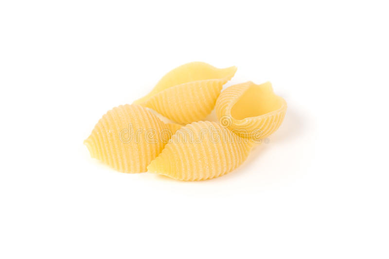
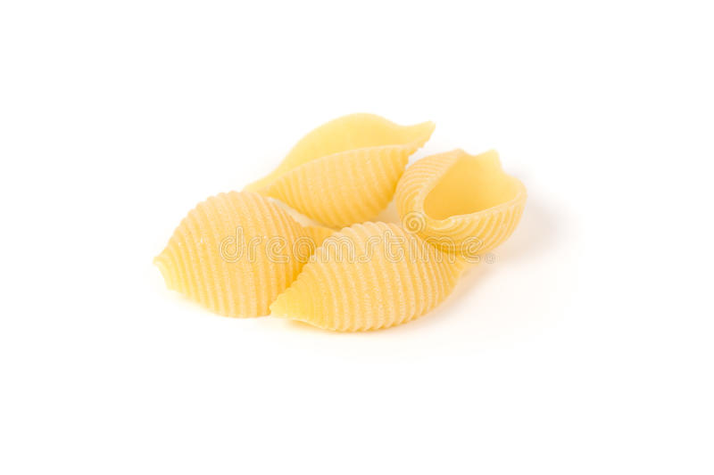

Les différentes pâtes
Spaghetti | Cannellonis | Cheveux d'ange
Coquilles | Farfalle | Mafaldine

Fusilli | Lasagnes | Macaroni
Penne | Tagliatelles | Pipe Rigate
LES PATES
Spaghetti | Cannellonis | Cheveux d'ange
Coquilles | Farfalle | Mafaldine

Fusilli | Lasagnes | Macaroni
Penne | Tagliatelles | Pipe Rigate